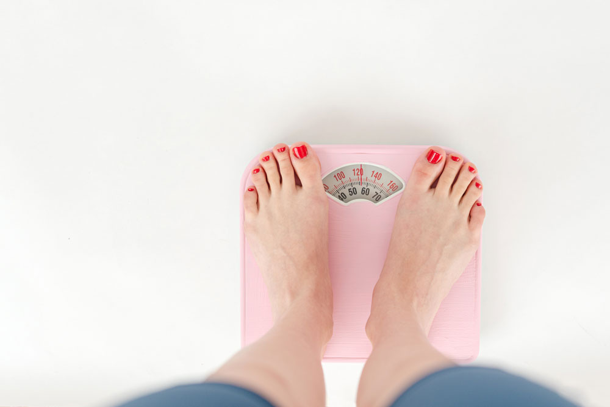

Embracing Your Unique Self
Are you feeling the pressure to conform to social norms and expectations? Embracing Your Unique Self can help you celebrate your authenticity and find your true purpose in life. Explore our website for resources, tips, and inspiration to break free from societal pressures and embrace your uniqueness. Join us in the movement towards self-discovery and self-love. Embrace Your Unique Self today.
The Reality of Beauty and Health
Beauty and health are essential aspects of our lives, but the pressure to conform to societal standards can be overwhelming. The reality of beauty and health is about finding a balance that works for you, one that prioritizes sustainable and realistic practices that embrace your unique beauty. By doing so, you can cultivate a positive relationship with your body and enjoy a healthy and fulfilling life. If you're ready to explore the reality of beauty and health, we invite you to click here to learn more about this important topic.
Embracing Your Flaws and Imperfections

Are you tired of striving for perfection and feeling like you don't measure up? Embracing Your Flaws and Imperfections is about celebrating your unique qualities and accepting yourself just as you are. By doing so, you can cultivate self-love, self-acceptance, and self-confidence. Click here to explore our website for resources, tips, and inspiration to help you on your journey towards embracing your flaws and imperfections. Join us in the movement towards a more positive and empowering relationship with ourselves. Embrace Your Flaws and Imperfections today!
Redefining beauty on your own terms

Ready to break free from societal beauty standards and define beauty for yourself? Redefining Beauty on Your Own Terms is about embracing your unique qualities and cultivating a positive and empowering relationship with yourself. Click here to explore our website for resources, tips, and inspiration to help you on your journey towards redefining beauty on your own terms. Join us in the movement towards a more diverse and inclusive definition of beauty. Redefine Beauty on Your Own Terms today!